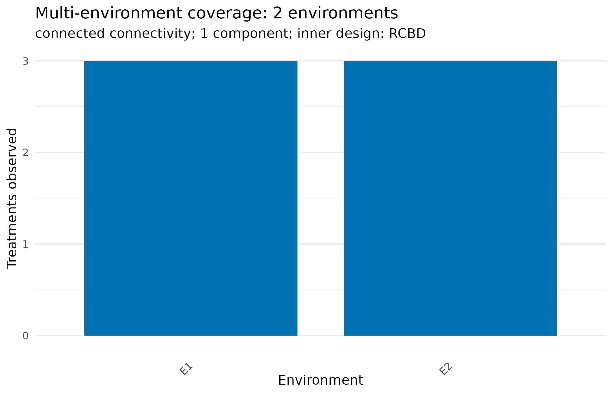

Why
A field agronomist has a confidential 72-plot trial and wants an outside statistician to build a spatial yield model on it, without the statistician seeing the real yields or genotype names. This vignette shows the agronomist’s side of that handover on the John and Williams (1995) alpha-design trial shipped with the package.
The synthetic table is a stand-in for writing code, meant for a named collaborator and not for public release. Confidentiality and the threat model sets out what is and is not protected. Read it before sharing any output.
What
masque() is the main function. Point it at a table, or a
folder or workbook of related tables, and it reads the data, proposes a
masking plan and masks the data. In an interactive session it pauses
first so the data owner can review the plan.
The output of masque() is a pair: the synthetic
clone, the only part that crosses the trust boundary, and a private
masque_recipe (see recipe()) that stays on the
data owner’s machine. With the recipe, a pipeline written on the
synthetic table later runs on the original without changes. Recipe
anatomy and the round-trip covers what the recipe holds and the
functions that use it.
Every column in the masking plan has a role and an
action, proposed by propose_roles() and
changed with set_role(). The role says what the column is:
design, treatment, outcome,
covariate, date, id,
text or other. The action says what happens to
it:
-
keeppasses it through unchanged. -
noisereplaces it with independent draws that use nothing from its values beyond a coarse summary. -
scramblere-simulates numerics through a Gaussian copula and shuffles categories and dates between rows. For a treatment it swaps the labels among the levels, so the allocation is unchanged. -
aliasreplaces the labels with opaque codes. A categorical covariate is shuffled between rows first. -
dropleaves it out.
What a default clone keeps
By default, every outcome and covariate is simulated independently. Each numeric column keeps only an eleven-point summary: its 1st percentile, deciles and 99th percentile. Only the experimental design and the pattern of missing values are kept exactly, and labels are replaced by codes.
In more detail, the default clone:
- keeps every design column’s structure exactly. Categorical design
labels become codes such as
block_D001, and numeric design columns such as row, column or plot number are kept as they are. - replaces treatment labels with codes such as
trt_001. Each plot keeps its treatment. - draws each numeric outcome and covariate, and each date column, independently from a distribution built on the column’s 1st percentile, deciles and 99th percentile. Every value lies between the 1st and 99th percentiles, apart from the rounding that keeps whole numbers whole.
- draws each categorical covariate uniformly over its levels,
relabelled as codes such as
soil_L001. A logical column is drawn uniformly over the values it holds. - draws a column that is constant within a design unit, such as a site-level rainfall, once per unit.
- is audited for leakage when it is made.
- keeps the missing values in the same cells, and each column’s storage class.
- drops columns that look like identifiers (by name, such as
plot_id), columns whose names suggest personal information (email,phone,owner), free text (a character column in which more than half the values are distinct) and columns of a classmasquecannot simulate.
Beyond the design and the treatment allocation, it keeps no relationship between columns, including the one between treatment and outcome, so it holds no real effect for a model to find. Use it to write and run a pipeline, not to tune one.
Opting into structure
The mode argument chooses the defaults for every column
at once. The default is "null", described above. Two other
modes keep more:
-
"local"is for the data owner’s own development. Labels stay as they are, identifiers and text are kept, and numerics are re-simulated through a Gaussian copula with empirical marginals, which keeps each column’s distribution and the correlations between numeric columns. A local clone must not leave the data owner’s machine. -
"collaborate"is for a clone shared with someone else. It simulates numerics as"local"does and jitters them, replaces treatment and categorical covariate labels with codes (design labels stay, apart from a detected environment), drops identifiers and free text, and runs the leakage audit (audit_mask(), which grades each column HIGH, medium or low) when the clone is made.
Only these two modes accept conditional = TRUE, which
mimics the treatment effect (see Confidentiality and the threat
model). A per-column action always overrides the
mode’s default.
Example
The one-call path
f <- system.file("extdata", "john_alpha.csv", package = "masque")
df <- read.csv(f, stringsAsFactors = TRUE)
knitr::kable(
head(df),
caption = "The first six plots of the alpha-design trial."
)| plot | rep | block | gen | yield | row | col |
|---|---|---|---|---|---|---|
| 1 | R1 | B1 | G11 | 4.1172 | 1 | 1 |
| 2 | R1 | B1 | G04 | 4.4461 | 2 | 1 |
| 3 | R1 | B1 | G05 | 5.8757 | 3 | 1 |
| 4 | R1 | B1 | G22 | 4.5784 | 4 | 1 |
| 5 | R1 | B2 | G21 | 4.6540 | 5 | 1 |
| 6 | R1 | B2 | G10 | 4.1736 | 6 | 1 |
m <- masque(df, seed = 5L, ask = FALSE)
#> ℹ Using the proposed masking plan (pass `roles` or set `ask = TRUE` to review).
#> ✔ Masked 7 columns in "null" mode - audit: 0 HIGH, 0 medium, 7 low.
#> ℹ Recipe is private - keep it. Review `audit_mask(m)` before any release decision; masque informs that decision, it does not make it.
#> ℹ Use the clone to write and run a pipeline, not to tune one.ask = FALSE skips the interactive review, as a vignette
must. In an interactive console, masque(df) shows the
proposed plan and asks whether to proceed, edit or stop. The messages
above are the summary masque() prints for every guided run:
the mode, the number of columns masked and the leakage-audit tally.
The result carries the synthetic data and the private recipe:
synth <- synthetic(m)
knitr::kable(
head(synth),
caption = paste0(
"The first six plots of the default clone: `rep`, `block` and `gen` ",
"are replaced by codes, and `yield` is drawn independently."
)
)| plot | rep | block | gen | yield | row | col |
|---|---|---|---|---|---|---|
| 1 | rep_D003 | block_D001 | trt_016 | 4.440634 | 1 | 1 |
| 2 | rep_D003 | block_D001 | trt_017 | 5.121781 | 2 | 1 |
| 3 | rep_D003 | block_D001 | trt_007 | 4.457193 | 3 | 1 |
| 4 | rep_D003 | block_D001 | trt_024 | 4.278534 | 4 | 1 |
| 5 | rep_D003 | block_D006 | trt_005 | 5.350735 | 5 | 1 |
| 6 | rep_D003 | block_D006 | trt_012 | 5.352128 | 6 | 1 |
The plot layout is unchanged, each real block maps to one coded block, and every synthetic yield lies between the 1st and 99th percentiles of the real yields:
identical(synth$plot, df$plot) && identical(synth$row, df$row) &&
identical(synth$col, df$col)
#> [1] TRUE
codes_per_block <- tapply(as.character(synth$block), df$block, function(x) {
length(unique(x))
})
all(codes_per_block == 1L)
#> [1] TRUE
range(synth$yield)
#> [1] 3.099973 5.708264
quantile(df$yield, c(0.01, 0.99))
#> 1% 99%
#> 3.067214 5.762384A clone with structure
When the pipeline needs the relationships between columns, ask for
them with a mode. A collaborate clone of the same trial re-simulates
yield through the copula and keeps the design labels. With only one
re-simulated numeric column (yield), there is no
correlation for the copula to keep, so the visible difference is that
the design labels stay:
m_collab <- masque(df, mode = "collaborate", seed = 2L, ask = FALSE)
#> ℹ Using the proposed masking plan (pass `roles` or set `ask = TRUE` to review).
#> ✔ Masked 7 columns in "collaborate" mode - audit: 0 HIGH, 0 medium, 7 low.
#> ℹ Recipe is private - keep it. Review `audit_mask(m)` before any release decision; masque informs that decision, it does not make it.
#> ℹ Use the clone to write and run a pipeline, not to tune one.
knitr::kable(
head(synthetic(m_collab)),
caption = paste0(
"The first six plots of a collaborate clone: design labels are kept, ",
"`gen` is replaced by codes, and `yield` is re-simulated."
)
)| plot | rep | block | gen | yield | row | col |
|---|---|---|---|---|---|---|
| 1 | R1 | B1 | trt_024 | 3.981642 | 1 | 1 |
| 2 | R1 | B1 | trt_009 | 4.787285 | 2 | 1 |
| 3 | R1 | B1 | trt_005 | 4.578083 | 3 | 1 |
| 4 | R1 | B1 | trt_012 | 3.973956 | 4 | 1 |
| 5 | R1 | B2 | trt_008 | 5.314588 | 5 | 1 |
| 6 | R1 | B2 | trt_014 | 5.315168 | 6 | 1 |
The masking plan each mode proposes for this trial:
plan_null <- propose_roles(df)
knitr::kable(
data.frame(
col = plan_null$col,
role = plan_null$role,
null = plan_null$action,
local = propose_roles(df, mode = "local")$action,
collaborate = propose_roles(df, mode = "collaborate")$action
),
caption = "The action each mode proposes for each column of the trial."
)| col | role | null | local | collaborate |
|---|---|---|---|---|
| plot | design | keep | keep | keep |
| rep | design | alias | keep | keep |
| block | design | alias | keep | keep |
| gen | treatment | alias | keep | alias |
| yield | outcome | noise | scramble | scramble |
| row | design | keep | keep | keep |
| col | design | keep | keep | keep |
The masking plan: roles and actions
Under the one-call path, masque() built the roles table
without asking. Building it yourself lets you review and change it
first:
plan <- propose_roles(df)
knitr::kable(
plan[, c("col", "role", "action", "kind")],
caption = "The proposed masking plan for the alpha-design trial."
)| col | role | action | kind |
|---|---|---|---|
| plot | design | keep | integer |
| rep | design | alias | factor |
| block | design | alias | factor |
| gen | treatment | alias | factor |
| yield | outcome | noise | numeric |
| row | design | keep | integer |
| col | design | keep | integer |
propose_roles() proposes an action for each column for
the chosen mode, so the table reviewed here is the plan that will run. A
roles table remembers the mode it was built for, and mask()
uses that mode unless told otherwise. yield was proposed as
the trial’s outcome from its name. In a default clone the
outcome role changes nothing. A conditional clone (see
Confidentiality and the threat model) uses it to find the
response. Any role can be changed with set_role(). Here
plot is given the role id, which the default
drops:
plan_id <- set_role(plan, "plot", role = "id")
knitr::kable(
plan_id[, c("col", "role", "action")],
caption = "The plan with `plot` as an identifier."
)| col | role | action |
|---|---|---|
| plot | id | drop |
| rep | design | alias |
| block | design | alias |
| gen | treatment | alias |
| yield | outcome | noise |
| row | design | keep |
| col | design | keep |
Changing a role resets the action to that role’s default, unless you
also pass action. Naming an outcome is optional. In local
and collaborate mode, outcomes and numeric covariates are re-simulated
together either way, and only a conditional clone reads the outcome
role.
Editing the plan as code
The plan is a data.table, so you can edit it in code. The spreadsheet
editor that opens when the data owner chooses e at the
guided prompt edits the same table. set_role() is
vectorised over columns:
Direct edits work too. A direct role edit leaves
action as it was. Set action to
NA and mask() fills in the new role’s
default:
r2[col == "rep", `:=`(role = "covariate", action = NA_character_)]
knitr::kable(
r2[, c("col", "role", "action")],
caption = paste0(
"A hand-edited plan: `row` and `col` dropped, `rep` made a ",
"covariate."
)
)| col | role | action |
|---|---|---|
| plot | design | keep |
| rep | covariate | NA |
| block | design | alias |
| gen | treatment | alias |
| yield | outcome | noise |
| row | design | drop |
| col | design | drop |
The kind column comes from the column’s class and cannot
be edited. If it is wrong, convert the column in the data and run
propose_roles() again.
role_options() lists the pairs the package accepts, here
for a factor column:
knitr::kable(
role_options(kind = "factor")[, c("role", "action")],
caption = paste0(
"Every (role, action) pair the package accepts for a factor ",
"column."
)
)| role | action |
|---|---|
| design | keep |
| design | alias |
| design | drop |
| treatment | keep |
| treatment | scramble |
| treatment | alias |
| treatment | drop |
| outcome | keep |
| outcome | drop |
| outcome | noise |
| covariate | keep |
| covariate | scramble |
| covariate | alias |
| covariate | drop |
| covariate | noise |
| date | keep |
| date | drop |
| id | keep |
| id | alias |
| id | drop |
| text | keep |
| text | scramble |
| text | alias |
| text | drop |
| other | keep |
| other | drop |
The plan also has a pii_suspected column.
propose_roles() sets it from the column name
(email, phone, owner, …) and
drops a flagged column in every mode. If a flagged column is kept, the
audit grades it HIGH. The scan reads names, not content. A harmlessly
named column that holds sensitive values, such as a paddock
column holding farm names, should be dropped by hand, or flagged so that
the audit grades it HIGH if it is kept:
plan <- set_role(plan, "paddock", action = "drop")
plan[col == "paddock", pii_suspected := TRUE]Passing a plan to mask(), or to
masque(df, roles = plan), runs it. Here is the proposed
plan as it stands:
m <- mask(df, plan, seed = 1L)
synth <- synthetic(m)
byte_identical_plot <- identical(synth$plot, df$plot)
gen_levels_changed <- !setequal(levels(synth$gen), levels(df$gen))
byte_identical_plot
#> [1] TRUE
gen_levels_changed
#> [1] TRUE
head(levels(synth$gen))
#> [1] "trt_001" "trt_002" "trt_003" "trt_004" "trt_005" "trt_006"A plan the package refuses
plot is a design column. Scrambling it
would break the trial’s layout, and mask() refuses:
bad_plan <- set_role(plan, "plot", role = "design", action = "scramble")
mask(df, bad_plan, seed = 1L)
#> Error in `roles_validate()`:
#> ! Incompatible role, action and kind combination:
#> ✖ plot (design + scramble): design columns are structure, not content - they cannot be scrambled;
#> use keep, alias (labels hidden, structure intact), or dropThe call stops before any masking, names the column and the
combination at fault, and lists the actions that do work for a design
column. The same check runs in every mode, whether the plan came from
propose_roles(), a hand edit or the guided editor.
More than one table
A confidential dataset often arrives as several related files or a
multi-sheet workbook. masque() handles those too. Point it
at a folder, an .xlsx file, or a named list of tables and
it masks every table at once, aliasing any shared key (a site code, a
genotype name) identically across tables so a join of the
synthetic tables still works.
set_dir <- system.file("extdata", "met_set", package = "masque")
ms <- masque(set_dir, seed = 1L, ask = FALSE)
#> Warning: Numeric environment column year remains "keep" in null mode.
#> ℹ This preserves environment structure but may disclose year or other numeric labels; review before
#> release.
#> ℹ To hide the values, convert the column to a factor in the data and re-run `propose_roles()`,
#> which proposes "alias" for a categorical environment; or set its action to "drop".
#> ℹ Using the proposed masking plan for agronomy (pass `roles` or set `ask = TRUE` to review).
#> ℹ Using the proposed masking plan for quality (pass `roles` or set `ask = TRUE` to review).
#>
#> ── Cross-table links (2) ──
#>
#> • "env" shared across "agronomy, quality" - aliased consistently
#> • "gen" shared across "agronomy, quality" - aliased consistently
#> ✔ Masked 2 tables (12 columns) in "null" mode - audit: 0 HIGH, 0 medium, 12 low.
#> ℹ Recipe is private - keep it. Review `audit_mask(m)` before any release decision; masque informs that decision, it does not make it.
#> ℹ Use the clone to write and run a pipeline, not to tune one.
ms
── masque_set ──────────────────────────────────────────────────────────────────────────────────────
• Mode: null
• Tables: 2
• agronomy: 464 rows x 7 columns
• quality: 464 rows x 5 columns
── Cross-table links (2) ──
• "env" shared across "agronomy, quality"
• "gen" shared across "agronomy, quality"
Use `synthetic(m)` for the tables; `recipe(m)` for the bundle.
✖ The recipe bundle is PRIVATE - never share it with the synthetic set.The environment column env and the genotype column
gen appear in both tables and are masked to the same codes
in each, so the agronomy and quality tables
still join. A key shared across tables takes a _K code,
such as gen_K056.
The warning is about year. It is an environment column,
but it is numeric, so its real values are kept. To replace its values
with codes, read the tables, convert year to a factor, and
mask the list:
tabs <- read_set(set_dir)
tabs$agronomy[, year := factor(year)]
ms <- masque(tabs, seed = 1L, ask = FALSE, quiet = TRUE)
knitr::kable(
head(synthetic(ms)$agronomy[, c("env", "loc", "year", "gen")], 3L),
caption = "The first rows of the clone, with `year` now coded."
)| env | loc | year | gen |
|---|---|---|---|
| env_K004 | loc_D002 | year_D002 | gen_K056 |
| env_K004 | loc_D002 | year_D002 | gen_K048 |
| env_K004 | loc_D002 | year_D002 | gen_K017 |
For a workbook, sheets = picks which sheets to read, and
info = names documentation sheets, such as a data
dictionary, to set aside: they are not masked and not written. See
Confidentiality and the threat model for the set-level
controls.
Describing the clone: the data card
A collaborator planning an analysis needs to know the shape of the
data before any code is written: how many rows, which columns are the
design, which is the outcome, how much is missing.
data_card() writes those facts down without a single value
of any column. It reads only the clone and its role table, which
roles() returns in the clone’s own column names:
| col | role | action | kind |
|---|---|---|---|
| plot | design | keep | integer |
| rep | design | alias | factor |
| block | design | alias | factor |
| gen | treatment | alias | factor |
| yield | outcome | noise | numeric |
| row | design | keep | integer |
| col | design | keep | integer |
The role table says which columns are design columns, but not which of them give a plot’s position or identify the plot. The data owner names those when writing the card:
card_file <- tempfile(fileext = ".yaml")
card <- data_card(
m,
file = card_file,
name = "alpha_trial",
spatial = c("row", "col"),
unit = "plot"
)
writeLines(head(readLines(card_file), 30))
#> card_version: "0.1"
#> produced_by:
#> package: "masque"
#> version: "0.18.0"
#> mode: "null"
#> table:
#> name: "alpha_trial"
#> source: "clone"
#> n_rows: 72
#> n_cols: 7
#> provenance:
#> n_rows: "structure"
#> n_cols: "structure"
#> design:
#> treatment_cols:
#> - "gen"
#> block_cols:
#> - "rep"
#> - "block"
#> spatial_cols:
#> - "row"
#> - "col"
#> unit_col: "plot"
#> provenance:
#> treatment_cols: "structure"
#> block_cols: "structure"
#> spatial_cols: "analyst"
#> unit_col: "analyst"
#> columns:
#> - name: "plot"Further down, each column has its own entry. The entries for the genotypes and the yields give counts and no values:
card_lines <- readLines(card_file)
gen_at <- grep('name: "gen"', card_lines, fixed = TRUE)
writeLines(card_lines[gen_at + 0:24])
#> - name: "gen"
#> role: "treatment"
#> kind: "factor"
#> n_levels: 24
#> n_missing: 0
#> na_share: 0.000000
#> provenance:
#> kind: "structure"
#> n_levels: "structure"
#> n_missing: "structure"
#> na_share: "structure"
#> - name: "yield"
#> role: "outcome"
#> kind: "numeric"
#> n_levels: 72
#> n_missing: 0
#> na_share: 0.000000
#> zero_share: 0.000000
#> provenance:
#> kind: "structure"
#> n_levels: "clone_estimate"
#> n_missing: "structure"
#> na_share: "structure"
#> zero_share: "clone_estimate"
#> - name: "row"Every entry carries a provenance class. structure marks
a count that is exact in the clone and so equal on the real table, such
as the number of missing values or the number of genotypes.
clone_estimate marks one that was drawn or re-simulated,
such as the number of distinct yields. analyst marks what
was named in the call. Level labels never appear: the card says there
are 24 genotypes and does not list them. When
alias_names = TRUE hides the column names, the card uses
the aliases. For a set, data_card(ms) returns one card per
table, and data_card(ms, file = dir) writes one file per
table.
Multi-environment structure
For a multi-environment trial, detect_design() answers
three questions separately:
- Which rows belong to each environment?
- Do the treatments connect the environments, so that they can be compared?
- What randomisation structure can be recovered within each environment?
A block or field layout seen in the data suggests the original randomisation but does not confirm it. A small toy with two environments and three genotypes:
met <- expand.grid(
env = factor(c("E1", "E2")),
rep = factor(seq_len(2L)),
gen = factor(c("G1", "G2", "G3"))
)
met$yield <- seq_len(nrow(met)) + rep(c(0, 2), each = 6L)
ds <- detect_design(met)
ds@scope_label
#> [1] "multi_environment"
ds@env_cols
#> [1] "env"
ds@connectivity$status
#> [1] "connected"
ds@within_design_label
#> [1] "RCBD"The toy has one environment column, env. The
environments are connected, and each holds a randomised complete block
design (RCBD).
Automatic detection is conservative. A column named env
or environment, or a common site-year pattern, is taken as
the environment only when no other column explains the structure as
well. A site column on its own is taken only when treatments are
replicated across sites, so a nested block is not mistaken for an
environment. When you know the environment columns, name them:
ds_explicit <- detect_design(met, env = "env")Figure: the multi-environment coverage plot
plot() on the result of detect_design(), or
plot_design_summary(), draws a compact environment overview
in base graphics. With engine = "ggplot2" it returns a
ggplot2 object you can save with
ggplot2::ggsave(). Printed, it is the figure below. It
shows whether coverage is even across environments, which the
connectivity flag alone does not.
plot(ds_explicit, df = met, engine = "ggplot2")
Treatments observed in each environment of the toy trial. The subtitle gives connectivity, the number of connected components and the design found within each environment.
Both bars are at three treatments, since every genotype in this toy trial appears in both environments. A shorter bar marks an environment with fewer treatments. A subtitle with more than one component marks environments that share no treatments with the rest and cannot go into one connected analysis. In either case, check whether the gap is real or comes from how the table was assembled.
An environment column that detect_design() identifies
with high confidence becomes a design column in the
plan:
- The default and collaborate modes code categorical environment labels in place, so each row stays in its environment and missing values stay where they were. The recipe turns the codes back into the real labels.
- Local mode keeps environment values byte-identical.
A numeric environment such as year stays at
keep, as shown above. The toy’s env column is
categorical:
met_roles <- propose_roles(met)
knitr::kable(
met_roles[met_roles$col == "env", c("col", "role", "action")],
caption = "How the default masking plan treats the `env` column."
)| col | role | action |
|---|---|---|
| env | design | alias |
Coding environment labels in place keeps the allocation a pipeline reads. A default clone carries no genotype-by-environment effect at all. A local or collaborate clone carries one only when it is conditional, and even then sparse treatment-by-environment cells may fall back to pooled synthesis. No clone is a substitute for the original trial in scientific inference.
Results
On this trial the audit of the default clone, counting its per-column
and whole-table checks together, gave 0 HIGH and 0 medium findings. A
HIGH finding would stop the package writing the synthetic to disk. The
plot layout comes back unchanged, the replicate and block labels come
back as codes, the genotypes come back as trt_001 to
trt_024, and each yield lies between the 1st and 99th
percentiles of the real yields. A plan that asks for something the
package will not do is refused before it runs. Related tables are masked
together and still join.
The agronomist can therefore hand over a default clone that keeps the
plot layout and the links between tables, and only a coarse summary of
the real yields. It still discloses the exact design and treatment
allocation, and any numeric environment such as year unless
it is converted first. The statistician can write and run a full
pipeline on it without seeing the real genotype names or yields. A
collaborate clone adds the correlations between numeric columns, at the
cost of real design labels and numerics within a measurement step of
observed values, and conditional = TRUE adds the treatment
effect. handover() writes the clone, its plan and its data
card to a folder for the collaborator. How the finished pipeline runs on
the real data is covered in Recipe anatomy and the
round-trip.
Limits
This vignette shows the data owner’s side of the handover, on one
small public trial with a clean, complete design. It does not exercise
the leakage audit’s failure modes, the coordinate controls or the
conditional clone, which are all in Confidentiality and the threat
model. A sensitive column with an ordinary name is caught only if
someone flags it by hand. Multi-environment detection can miss a real
environment when the names and replication are ambiguous, so name
env explicitly when you know it. The trial has only one
numeric outcome, so the vignette does not show what the Gaussian copula
of local and collaborate mode keeps of the relationships between
columns. That is also in Confidentiality and the threat
model.
What to read next
Confidentiality and the threat model sets out what a synthetic clone protects and what it does not, the depth controls beyond role and action, the leakage audit, and the conditional clone that mimics a treatment effect. Recipe anatomy and the round-trip covers the return leg: what the recipe carries, and how the data owner runs the finished pipeline on the original with it. What a conditional clone keeps of the design tests what a model fitted on a conditional clone still finds, on eight field designs. Known-truth controls derives datasets in which the answer is known, to check a pipeline before it meets the real data.
Reproduce
set.seed(1) is set once for the document, and every
masque() or mask() call passes its own seed,
so each is reproducible on its own. Package versions follow.
sessionInfo()
#> R version 4.6.2 (2026-10-29)
#> Platform: x86_64-pc-linux-gnu
#> Running under: Ubuntu 26.04.1 LTS
#>
#> Matrix products: default
#> BLAS: /usr/lib/x86_64-linux-gnu/openblas-pthread/libblas.so.3
#> LAPACK: /usr/lib/x86_64-linux-gnu/openblas-pthread/libopenblasp-r0.3.32.so; LAPACK version 3.12.0
#>
#> locale:
#> [1] LC_CTYPE=C.UTF-8 LC_NUMERIC=C LC_TIME=C.UTF-8 LC_COLLATE=C.UTF-8
#> [5] LC_MONETARY=C.UTF-8 LC_MESSAGES=C.UTF-8 LC_PAPER=C.UTF-8 LC_NAME=C
#> [9] LC_ADDRESS=C LC_TELEPHONE=C LC_MEASUREMENT=C.UTF-8 LC_IDENTIFICATION=C
#>
#> time zone: UTC
#> tzcode source: system (glibc)
#>
#> attached base packages:
#> [1] stats graphics grDevices utils datasets methods base
#>
#> other attached packages:
#> [1] masque_0.18.0
#>
#> loaded via a namespace (and not attached):
#> [1] vctrs_0.7.3 cli_3.6.6 knitr_1.52 rlang_1.3.0
#> [5] xfun_0.62 otel_0.3.0 textshaping_1.1.0 S7_1.0.0
#> [9] data.table_1.18.6.1 jsonlite_2.0.0 labeling_0.4.3 glue_1.8.1
#> [13] htmltools_0.5.9 ragg_1.5.2 sass_0.5.0 scales_1.4.0
#> [17] rmarkdown_2.32 grid_4.6.2 evaluate_1.0.5 jquerylib_0.1.4
#> [21] fastmap_1.2.0 yaml_2.3.12 lifecycle_1.0.5 compiler_4.6.2
#> [25] fs_2.1.0 RColorBrewer_1.1-3 systemfonts_1.3.4 farver_2.1.2
#> [29] digest_0.6.39 R6_2.6.1 pillar_1.11.1 bslib_0.12.0
#> [33] withr_3.0.3 tools_4.6.2 gtable_0.3.6 pkgdown_2.2.1
#> [37] ggplot2_4.0.4 cachem_1.1.0 desc_1.4.3